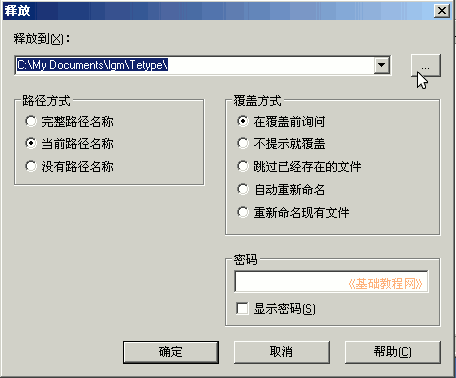

7-Zip 压缩软件基础
作者：TeliuTe 来源：基础教程网
7-Zip 程序，可以解压缩多种压缩文件，默认的是 7z 格式，下面我们来看一个练习；
1、获得压缩文件
1）从网上下载，常见的格式有 rar、zip、7z 等； ；
2）也可以通过软盘、光盘、U盘中传送，把文件复制到自己的文件夹中；
3）自己准备一个文件，我们用它来练习，用文本文档或者电子表格；
2、解压文件
1）瞄准压缩文件点右键，在弹出的菜单中选择“7-Zip－当前目录释放”；
这样就把文件解压到了当前的位置，压缩包中只有一个文件，可以用这个方法；
2）在压缩包上点右键，在弹出的菜单中选择“释放到 文件夹\”；
这样就把文件解压到一个文件夹里，文件夹的名称是压缩文件名，当压缩包里有多个文件时，可以用这个命令；
3）在压缩包上点右键，在弹出的菜单中选择“释放文件(A)...”；
4）这时候会弹出一个释放对话框，在这儿可以选择解压的位置等，然后点下边的“确定”；

5）这儿直接点确定也可以，就跟第上一个命令一样了，解压到一个新的文件夹中，还可以在目标路径的后面输入新的名字；
本节学习了解压缩文件的基本方法，如果你成功地完成了练习，请继续学习下一课内容；
本教程由86团学校TeliuTe制作|著作权所有
基础教程网：http://teliute.org/
美丽的校园……
转载和引用本站内容，请保留作者和本站链接。